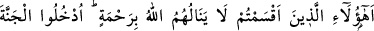
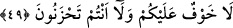

“size hiçbir yarar sağlamadı.” azabı sizden uzaklaştırmadı diyeceklerdir.
49. Allah’ın, kendilerini hiçbir rahmete erdirmeyeceğine dair yemin ettiğiniz
kimseler bunlar mı?” (ve cennet ehline dönerek): “Girin cennete; artık size korku
yoktur ve siz üzülecek de değilsiniz” (derler).
“Allah onları hiçbir rahmete erdirmeyecek.” diye yemin ettiğiniz kimseler bunlar
mıydı?” Bu söz, önceki ayette A’raf ehlinin kâfirlerin reislerine söyledikleri sözün
devamıdır. Haklarında yemin edilen kimseler, kâfirlerin dünyada iken tahkir edip
cennete giremeyeceklerine dair açıkça yemin ettikleri zayıf ve güçsüz mü’minlerdir.
Sonra A‘raf ehli, Bilâl, Suheyb, Selmân, Habbab gibi fakir mü’minlere dönerek:
“Kâfirlerin reislerine inat “girin cennete,” cehennemlikler korktuğu vakit “artık size
ne korku vardır,” yine cehennemlikler üzüldüğü zaman “ne de üzüleceksiniz.” derler.”
Ayette mal, kibirlenme; hizmetçi, yardımcı ve taraftarlarının çokluğuyla iftihar etme
yerilmiştir.
Zenginin başkasından üstünlüğü mal ile değildir
Eşek yüz atlas giyse de yine eşektir
Aklın ve himmetin bu iken ben sana insan bile demem
Arkandan yüz hizmetkâr yürüse bile
Görkeme tapan adam tekebbür eder
Çünkü büyüklüğün iyi huyla olduğunu bilmez
Felek bir alçağı nimet sahibi yaparsa
O da dervişlerin/yoksulların muztarip kalbine yüklenir
Mağrur adam, kendi damı yüksek olunca
Damlara işer yahut süprüntüleri atar oraya
Bil ki mal sevgisi ve büyüklenmek nefsin huylarından olup sâlikin bunlardan
temizlenmesi gerekir. Allah Teâlâ kendisini: “Sen büyük bir ahlak üzerindesin.” (en-
Nûn, 68/4) buyurarak övdüğü halde Rasûlullah (a.s.) sürekli: “Allah’ım, yaradılışımı
ve ahlakımı güzelleştir.”[41] diye dua ederdi. Fakirlerle, miskinlerle beraber oturur,
dertlerini dinler ve işlerini üstlenirdi. Çocukların yanlarına uğrar ve onlara selâm
verirdi.
Bir gün Rasûlullah (a.s.)’ın huzuruna bir adam geldi. Peygamberimizin (a.s.)
heybetinden titremeye başladı. Rasûl-i Ekrem ona: “Sakin ol, ben bir kral değilim. Ben
ancak Kureyş kabilesinden kurutulmuş et yiyen bir kadının oğluyum.” buyurdu.[42]